Навыки рыболова
Все о снастях и оснастках
Рыболовные снасти — это совокупность инструментов, приспособлений и оснастки, используемых для любительской, спортивной или промысловой ловли рыбы. К основным элементам относятся удилища, катушки, лески, крючки, грузила, поплавки и искусственные приманки (блесны, воблеры), обеспечивающие эффективное привлечение и поимку рыбы.
Самые основные снасти для любого рыбака – это катушка и удилище, которые будут подробно рассмотрены в данной статье.
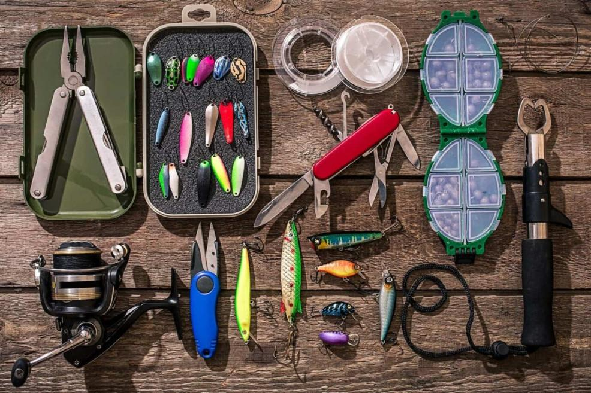
- Болонское удилище («болонка») — это телескопическое поплавочное удилище с пропускными кольцами и держателем для катушки, предназначенное для ловли в проводку на течении и дальних забросов.
- Маховое удилище — это простейшая поплавочная снасть (телескопический бланк без колец и катушкодержателя), у которой оснастка (леска с поплавком, грузилом и крючком) крепится к кончику удилища.
- Фидер — это специализированная снасть для донной ловли с кормушкой, оснащенная множеством пропускных колец и гибкими сменными вершинками (квивертипами) для регистрации поклевки. Оно предназначено для точного заброса прикормки на большие дистанции. Обычно состоит из 3-4 штекерных секций, длина достигает 4 метров.
- Спиннинговое удилище — это специализированная снасть для активной ловли хищной рыбы (щуки, окуня, судака) на искусственные приманки (блесны, воблеры, джиг) путем их забрасывания и проводки. Оно отличается высокой прочностью, наличием пропускных колец, чувствительной вершинкой и рукоятью для катушки. Обычно имеет длину 1,65–3,6 м и делится на штекерные (2 колена) и телескопические.
- Телескопическое удилище (в народе «телескоп») — это компактная рыболовная снасть, состоящая из нескольких полых выдвижных секций (колен), которые задвигаются одна в другую, подобно телескопу. Основное преимущество — удобство при транспортировке (50-150 см в сложенном виде).
- Штекерное удилище — это высокотехнологичная рыболовная снасть (обычно фидер или спиннинг), состоящая из нескольких соединяемых (штепсельных) колен, обеспечивающая максимальную точность, чувствительность и прочность.
- Тест удилища — это указанный производителем диапазон веса оснастки (в граммах или унциях), наиболее подходящий для комфортного заброса и проводки данной снастью. Он определяет минимальный и максимальный вес приманки, обеспечивая дальний заброс без риска сломать вершинку. Обычно указывается на бланке рядом с рукояткой, например, 5-25г.
- Длина удилища – длина снасти, при ее собранном состоянии.
- Строй удилища — это характеристика, определяющая форму изгиба бланка (удочки) под нагрузкой, показывающая - какая часть удилища гнется при забросе и вываживании. Строй определяет скорость возвращения бланка в исходное положение, чувствительность и дальность заброса. Основные типы: очень быстрый (изгиб кончика), быстрый, средний и медленный (изгиб всего бланка).
Рыболовное удилище
Удилище — это основной элемент рыболовной снасти, представляющий собой длинный гибкий стержень (обычно конической формы) из углепластика, стекловолокна или композита. Оно служит для заброса приманки, проводки и вываживания рыбы, состоя из рукоятки (комеля) и гибкой вершины.
Удилища бывают разных видов, длин, имеют разный тест и строй.
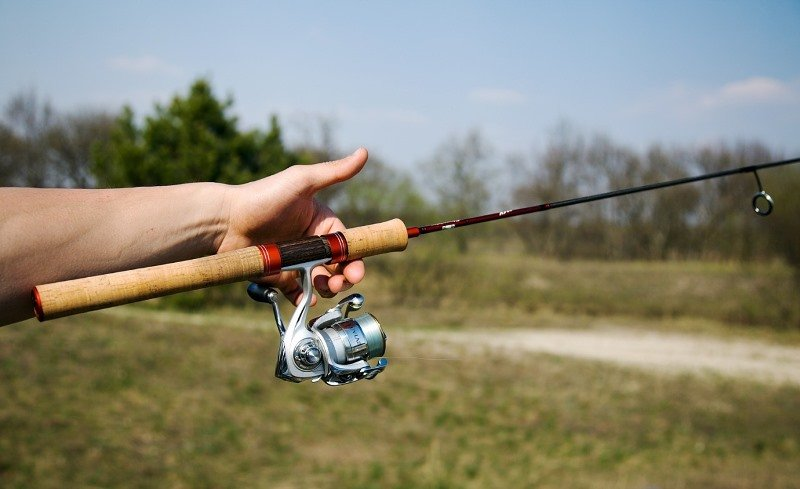
Виды удилищ:
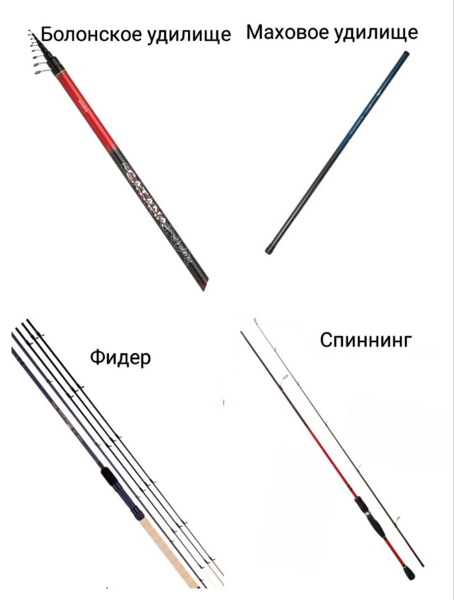
Также удилища различаются не только по виду ловли, для которого они предназначены, но и по их конструкции, то есть удилище может быть телескопическим или штекерным.
Для поплавочной ловли я рекомендую брать телескопическое удилище, так как оно компактнее и рыба, которая клюет на поплавок в основном не оказывает слишком сильного сопротивления. Для доночной и спиннинговой ловли следует брать штекерное удилище, так как оно намного прочнее и надежнее чем телескопическое, а для данных видов ловли прочность крайне важна.
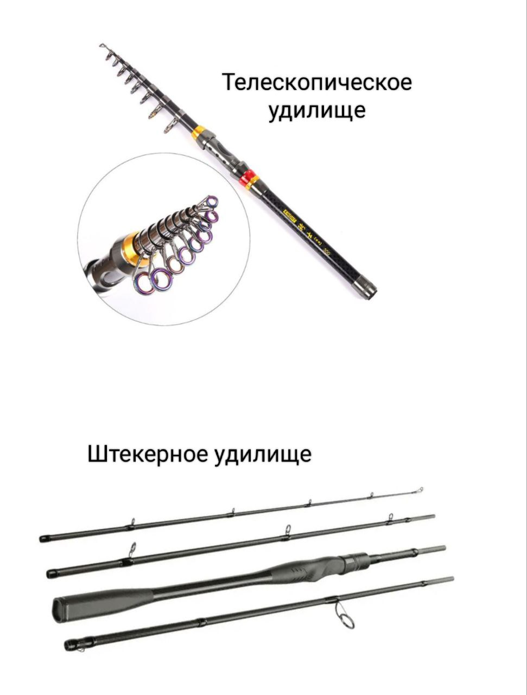
У каждого удилища есть несколько важных параметров:
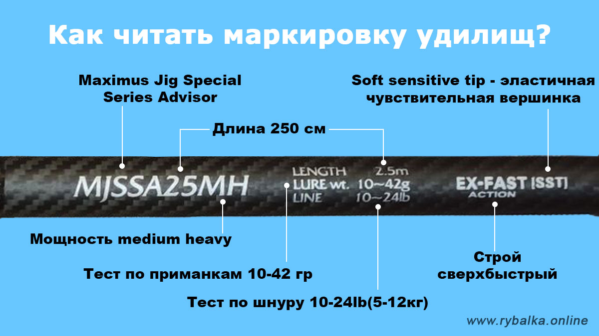
Как выбрать удилище?
Чтобы правильно выбрать удилище нужно ориентироваться в его главных параметрах и соотносить их с вашими целями в рыбалке.
Чтобы выбрать длину удилища, нужно понять: где вы будете рыбачить. Если вы собираетесь ловить с берега на широком быстром водоеме, то длина вашего удилища должна быть около (3.0-3.9) м для фидера и (2.4-3.0) м для спиннинга, если ваша цель – рыбачить на небольшом озере или речке, то длина вашего удилища должна быть где-то (3.0-4.0) м для поплавочной удочки, (2.4-3.0) м для фидера и (2.0-2.4) м для спиннинга, если вы рыбачите на спокойном большом озере, для поплавочной удочки рекомендуемая длина – (4.0-6.0) м.
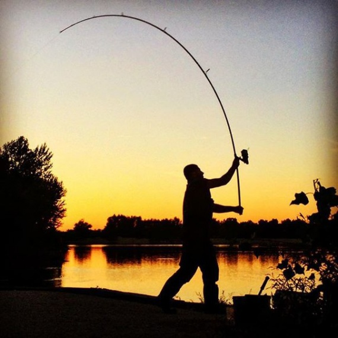
Для выбора теста удилища вы должны понимать: какой массы оснастку вы будете использовать. Например, если вы хотите ловить на фидер в водоеме с сильным течением, то вам понадобиться тяжелая оснастка, чтобы кормушка могла опуститься на дно, то есть и тест удилища должен быть большим – (80-160) г или (60-120) г. С удилищами для поплавочной ловли не следует сильно беспокоится о тесте, тест поплавочной удочки может не превышать 50 г. Со спиннинговыми удилищами главную роль играет размер рыбы, которую вы хотите поймать, если вы ловите большую рыбу, то вам нужны большие, тяжелые приманки, а следовательно, и тест должен быть около (20-50) г, (40-90) г и больше, если вы охотитесь за средними рыбами максимальный тест удилища должен быть не больше 45г. Главное в выборе теста, это понимать, что тест удилища напрямую влияет на дальность заброса вашей приманки, если вы поставили приманку меньше указанного минимального теста, то заброс будет не таким дальним, а если вы наоборот перегрузите удилище, то рискуете его сломать. Нужно выбирать удилище так, чтобы его тест подходил под вес ваших приманок и оснасток.
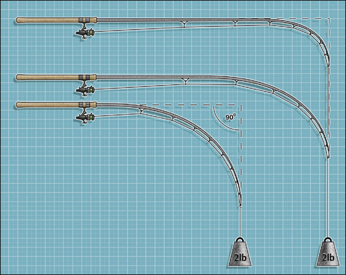
Строй удилища – это параметр, который в основном важен только для спиннинговой ловли. Его выбрать очень просто – нужно знать на какие приманки вы собираетесь ловить. Если ловите на воблер, то вам нужен очень быстрый и быстрый строй, если ловите на блесну, то подойдет как быстрый, так и средний строй, а если ловите на джиг, то вам нужен средний и медленный строй.
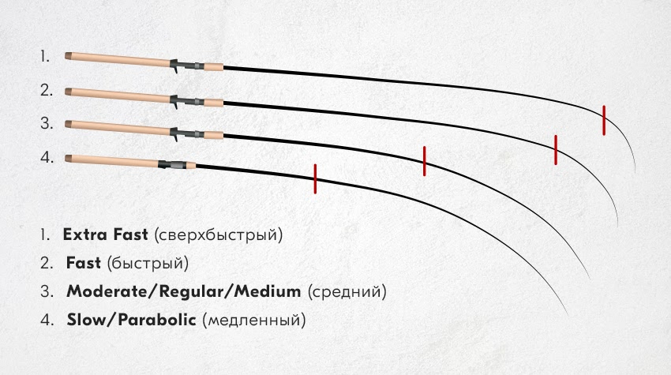
Покупка удилища
Теперь вы знаете - как выбрать удилище по его параметрам, вы определились с местом и видом ловли, но тут перед вами встал вопрос:” Как же выбрать качественное удилище среди множества брендов?” Чтобы это выяснить, вам нужно проделать небольшое исследование, смотреть обзоры, сравнивать характеристики, читать отзывы и знать свой бюджет. Выбор удилища – это субъективная вещь, каждый выбирает себе снасть по вкусу и предпочтениям, поэтому я лишь могу дать советы насчет хороших брендов.
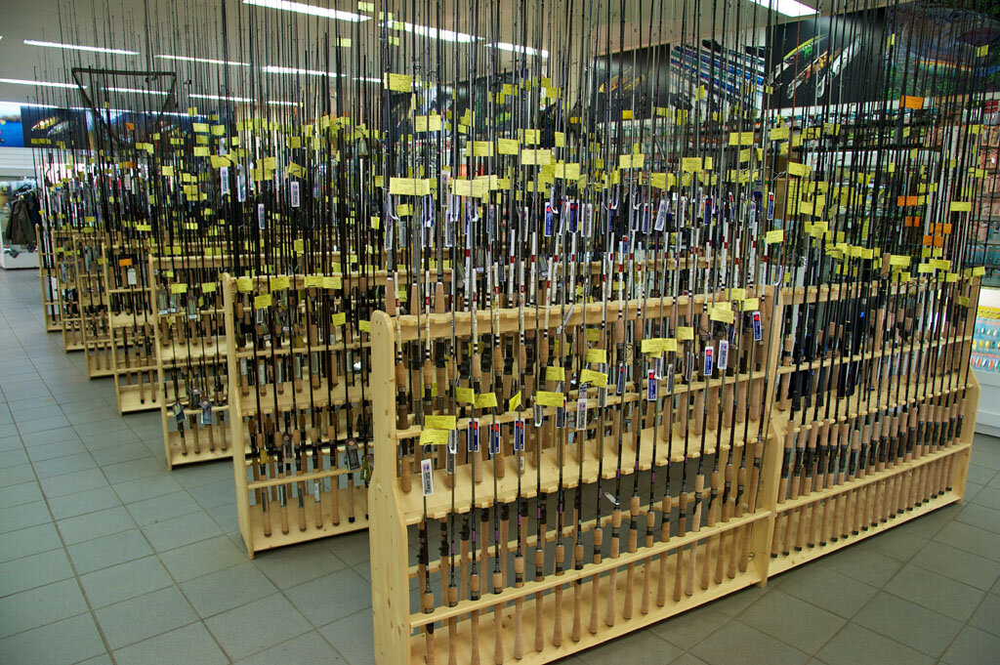
Если вы не хотите тратить много денег на удилище и получить качество и надежность, то стоит присмотреться к брендам – KAIDA, MiFine, Nautilus, Ryobi, Lucky John.
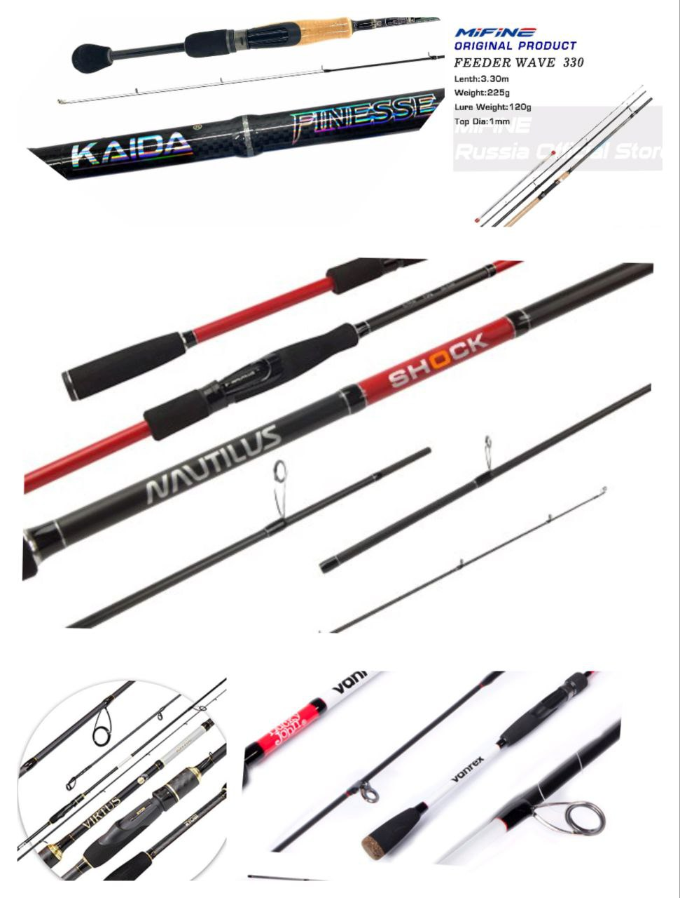
Если вы готовы раскошелиться на качественную удочку, то вы можете купить удилища брендов – SHIMANO, DAIWA, NARVAL, Zetrix, CF Company, Волжанка, FLAGMAN.
Важно понимать, что чем дороже снасть, тем она нежнее и хрупче, дорогие удилища легче, чувствительнее, удобнее, но они не прощают рыболовных ошибок, в отличие от бюджетных снастей, поэтому новичкам в рыбалке я рекомендую покупать удилище по проще.
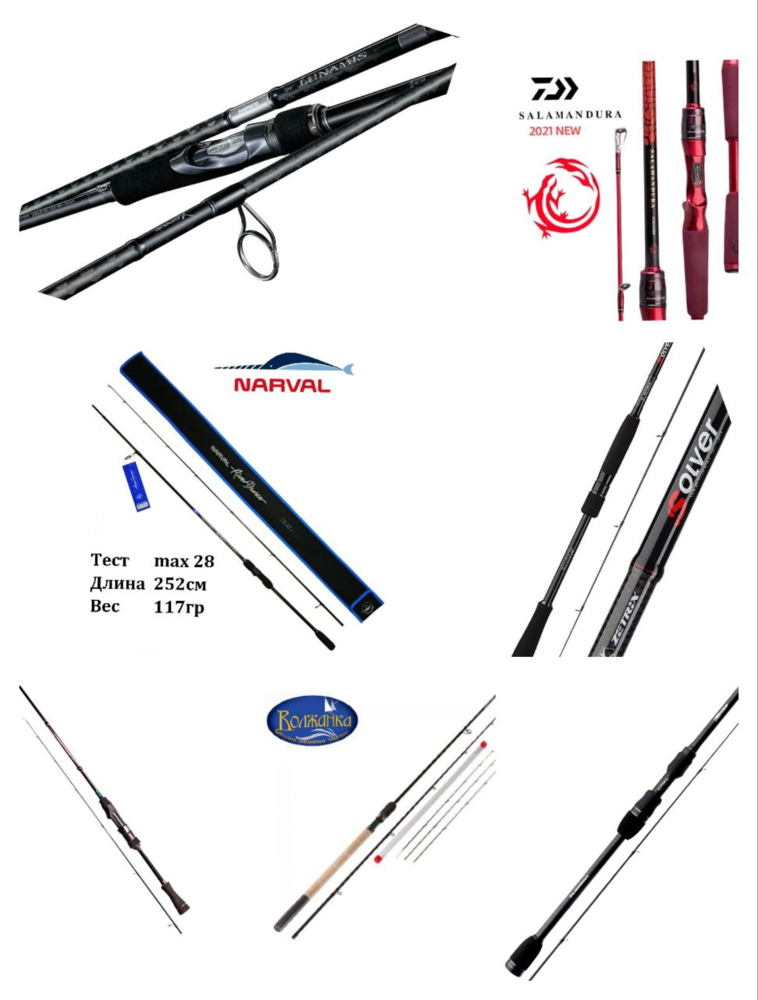
- Безынерционная катушка (“мясорубка”) — это самый популярный и универсальный тип рыболовной катушки, при котором леска сходит кольцами с неподвижной шпули, что позволяет забрасывать очень легкие приманки без запутывания. Это идеальный выбор для начинающих, обеспечивающий комфортную, точную ловлю и использование фрикционного тормоза для вываживания крупной рыбы.
- Инерционная катушка — это простая рыболовная катушка, в которой шпуля вращается при забросе под действием инерции, сматывая леску. Она отличается высокой надежностью, простотой конструкции и низкой ценой.
Рыболовная катушка
Рыболовная катушка — это механическое устройство, крепящееся на удилище для хранения, сматывания и разматывания лески. Она обеспечивает дальний заброс приманки, контроль проводки и облегчает вываживание рыбы.
Существует два основных вида катушек, о которых следует знать начинающему рыболову:
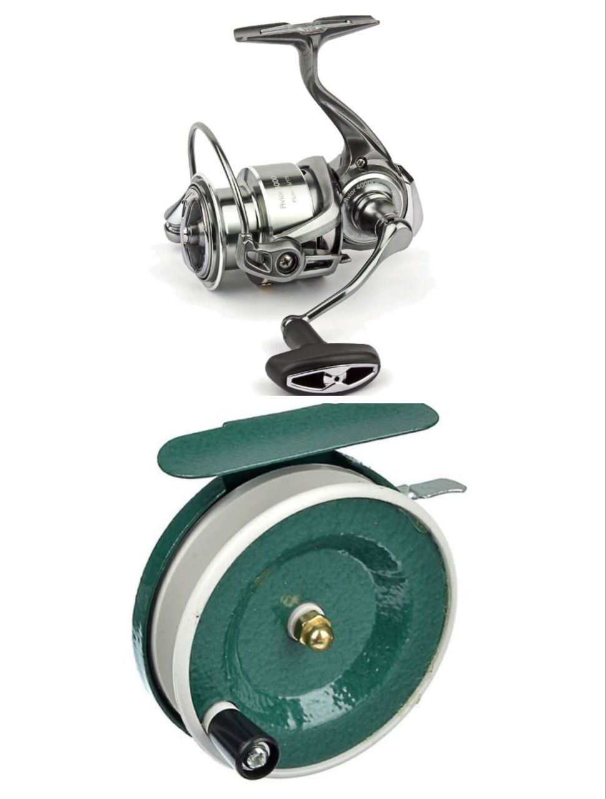
В нынешнее время инерционные катушки не так популярны, хотя раньше их использовали часто. Эти катушки очень просты в использовании, они не ломаются от намокания и загрязнения, а также они очень дешевые, эти катушки в основном стоят не дороже 1000 российских рублей. Но у этих катушек есть большая проблема – они не могут выдерживать большой нагрузки, поэтому чаще всего их используют при ловле на поплавок некрупной рыбы. Инерционная катушка – это отличный бюджетный вариант для ловли небольшой мирной рыбы до 2 кг.
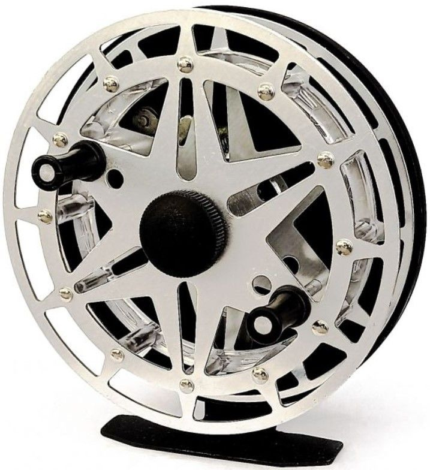
Безынерционные катушки чаще всего используют со спиннингом или фидером. Эти катушки хороши тем, что могут выдерживать большие нагрузки благодаря наличию фрикциона. Фрикцион (фрикционный тормоз) — механизм безынерционной катушки, стравливающий леску при критических нагрузках, предотвращая обрыв оснастки и поломку снасти при рывках рыбы. Он состоит из дисков, регулируемых винтом (передним/задним) для настройки силы сопротивления. Настраивается под разрывную нагрузку лески перед рыбалкой. Также эти катушки бывают разных размеров и мощности.
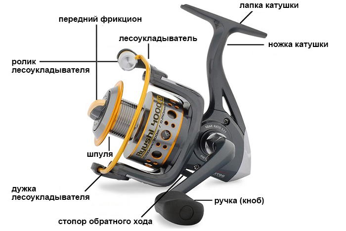
Важные параметры при выборе безынерционной катушки
Максимальная нагрузка на фрикцион и его качество: каждая катушка имеет разную максимальную нагрузку на фрикционный тормоз, которая указывается на коробке.
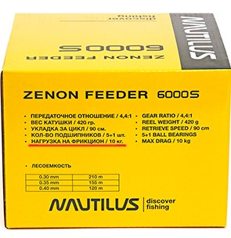
Размер шпули — это условная маркировка (1000–20000), указывающая на лескоемкость и диаметр шпули рыболовной катушки. Она определяет - сколько лески конкретного диаметра поместится на катушке, и влияет на дальность заброса, вес снасти и мощность. Маленькие размеры (1000–2000) подходят для легких снастей, крупные (4000+) — для дальних забросов и тяжелых приманок.
Размер шпули катушки: размер шпули катушки зависит от того, какую оснастку вы будете использовать и какую рыбу ловить. Если вы используете тяжелую оснастку, то катушка должна быть (4000+) размера. Если ловите на легкую снасть, то следует брать катушку (1000-3500) размера. Также размер желаемой рыбы влияет на выбор – если вы ловите крупную, сильную рыбу, то берите катушку (4000+) размера, если ловите мелкую, среднюю рыбу, то обратите внимание на экземпляры (1000-3000) размера. Если вы вдруг решили порыбачить на крупного карпа в платном водоеме, то размер катушки должен быть от 6000 и больше. Размер катушки указывается на коробке и чаще всего на самой шпуле катушки.
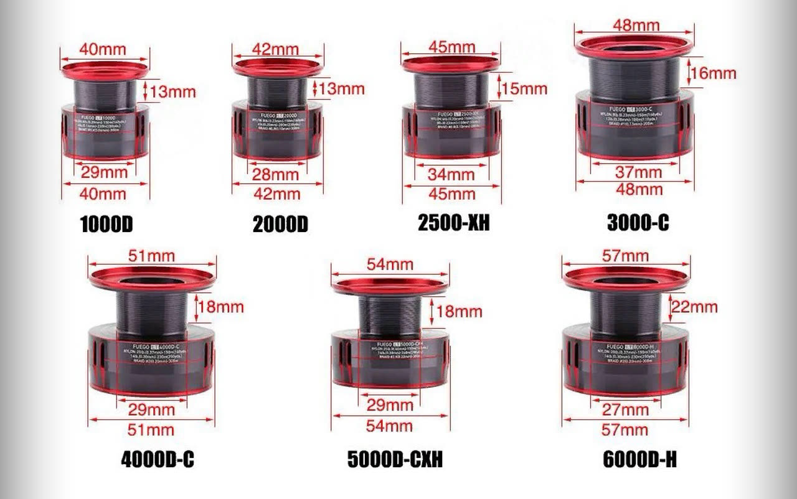
Плавность хода катушки — это показатель легкости, мягкости и бесшумности вращения ротора при работе. Хорошая плавность характеризуется отсутствием вибраций, стуков или ощутимых «зацепов» механизма, что обеспечивает комфортную проводку приманки, точность ощущений поклевки и долговечность работы. Плавность хода можно определить, покрутив ручку катушки, если вы не ощущаете ощутимых вибраций, то катушка подходит.
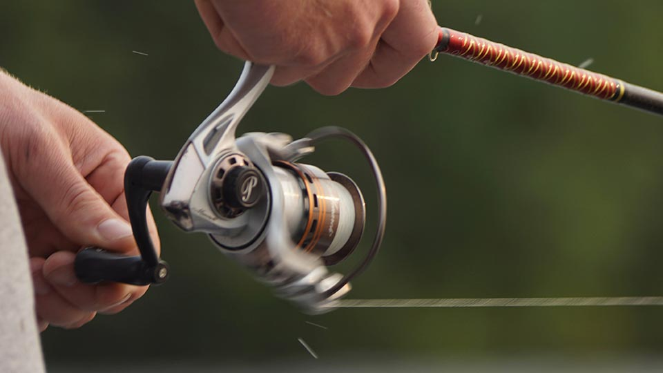
Лескоемкость катушки – это длина лески/плетенки, которая рекомендуема для намотки на шпулю катушки, обычно это значение указывается на коробке. Большая лескоемкость катушки позволяет рыбаку делать более дальние забросы и справляться с сильной рыбой.
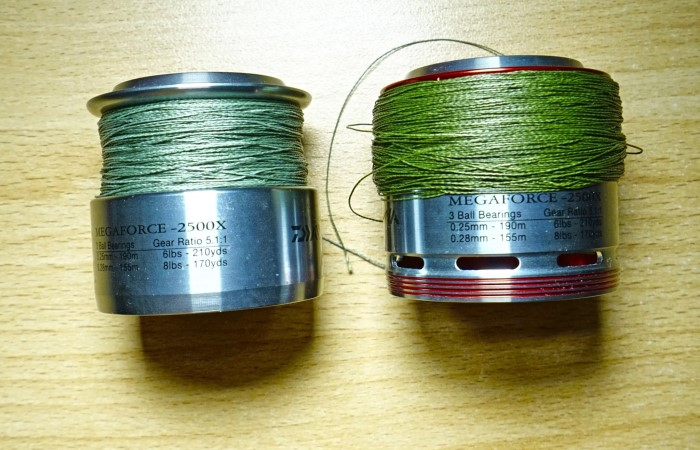
Как пользоваться фрикционом безынерционной катушки?
Чтобы фрикцион работал, сначала его нужно настроить, переключатель фрикционного тормоза может находиться спереди (на шпуле катушки) или на задней части катушки. Переключатель представляет собой крутящийся диск с ручкой, если повернуть его по часовой, то фрикцион затянется, то есть леска будет сложнее разматываться при закрытой шпуле, а если повернуть против часовой, то фрикцион расслабиться и леска будет выходить легко.
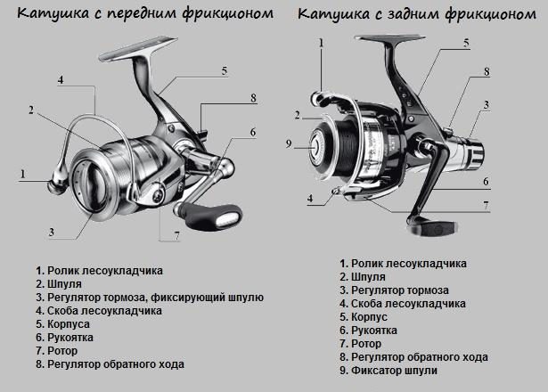
Главное при настройке фрикциона – помнить, что при забросе он должен быть расслаблен, чтобы не возникла “борода” на леске, при ожидании поклевки на фидере или ведении приманки спиннингом фрикцион должен быть затянут средне. При поклевке фрикцион следует затянуть, если рыба оказывает сильное сопротивление. Важно, при ловле щуки на спиннинг следует сразу затянуть фрикцион выше среднего, ведь у этой рыбы очень жесткая пасть и со слабым фрикционом можно просто не просечь рыбу и упустить ее.
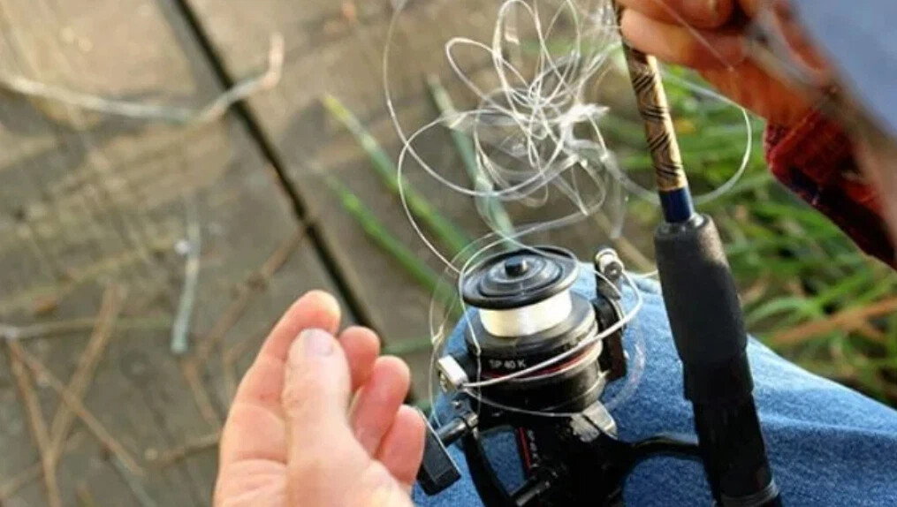
Совместимость катушки и удилища
Кроме данных параметров при выборе катушки нужно учитывать и параметры вашего удилища, ведь если вы возьмете слишком мощную катушку, для слабого удилища, удочка может сломаться, а если будет наоборот, это может повлиять на дальность заброса и реализацию поклевок. Для удилища с максимальным тестом, не превышающим 45 г, можно смело брать катушку (1000-3500) размера, а если максимальный тест удилища превышает 50 г, следует брать катушку (4000+) размера. По такому же принципу стоит соотносить максимальную нагрузку на фрикцион, то есть чем больше максимальная нагрузка на фрикцион, тем больше тест удилища.
Покупка катушки
Как и с удилищами брендов катушек существует огромное количество, все они имеют разный вес, форму, размер, лескоемкость, цвет. Чтобы выбрать катушку нужно ориентироваться на свои предпочтения в ловле, а также на свой личный вкус.
Вот примеры хороших бюджетных брендов катушек: KAIDA, MiFine, Ryobi, Nautilus, Maximus, Dayo.
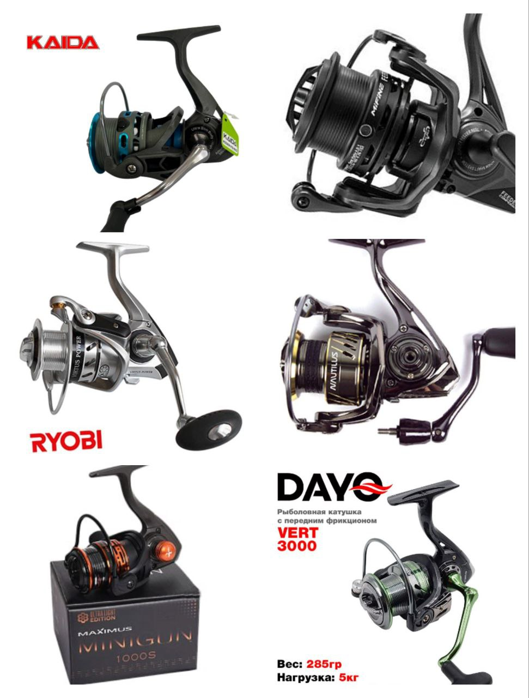
Если вы предпочитаете максимальное удобство и качество, то вот одни из дорогих брендов катушек: SHIMANO, DAIWA, FEEDER CONCEPT.
Напоминаю, что дороже — не всегда значит лучше, бюджетных катушек вполне достаточно для комфортной ловли начинающему рыбаку, тем более дорогие катушки хрупче, за ними нужно больше ухаживать и они менее износостойкие.
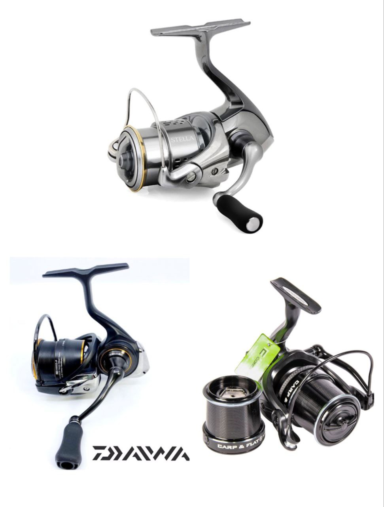
Виды узлов и способы их вязания
Самое важное в рыбалке – это не удилище, не катушка и даже не наживка, самое главное – это хороший, крепкий узел, ведь без него невозможно даже привязать крючок к леске.
Существует большое разнообразие рыболовных узлов, в данной статье будет рассказано об основных из них.
Узлы для привязывания крючка:
Узел “Рыбацкая петля”, он же “кнутовый”
Узел “Клинч”, так же подходит для привязывания карабина или вертлюга к леске
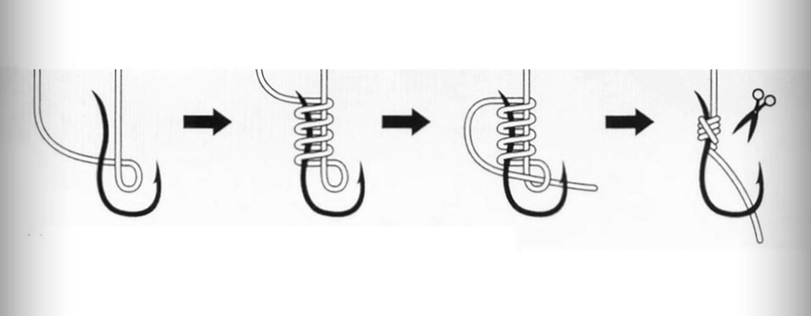
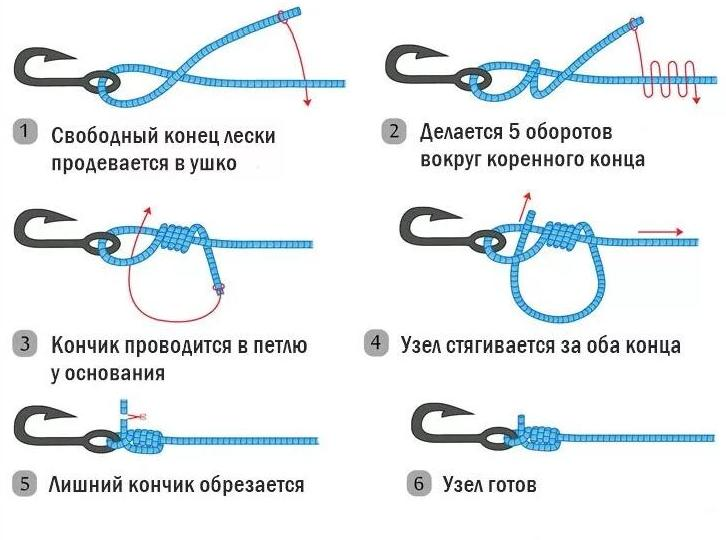
Узлы для привязывания поводков, карабинов и вертлюгов:
Узел “Гриннер”
Узел “Паломар”
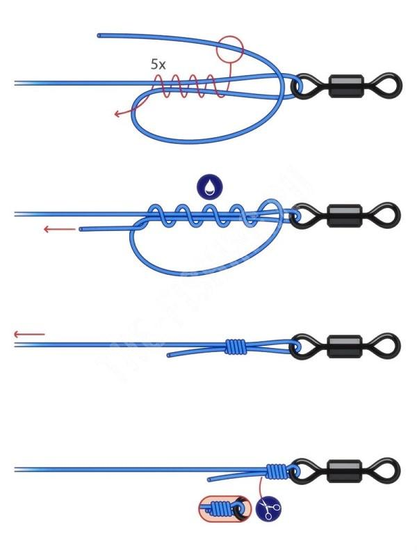
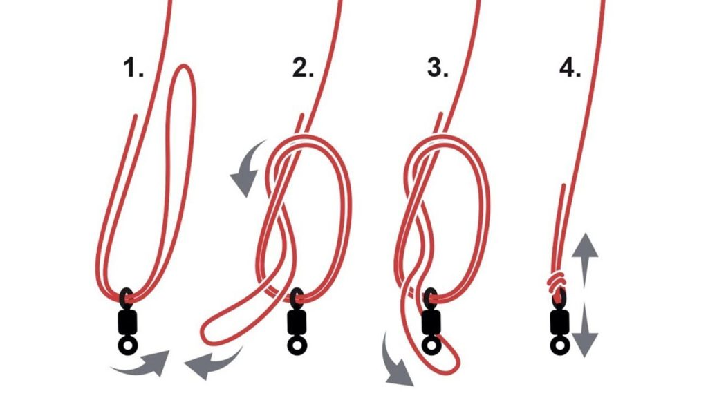
Узлы для создания петель:
Узел “Восьмерка”
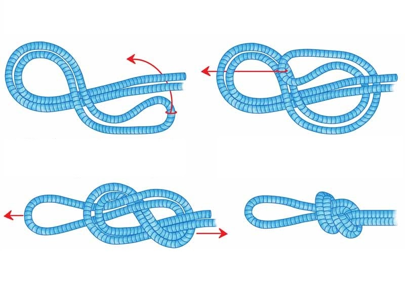
Узлы для связывания двух лесок:
Узел “Олбрайт”
Узел “Морковка”
Соединение “Петля в петлю”
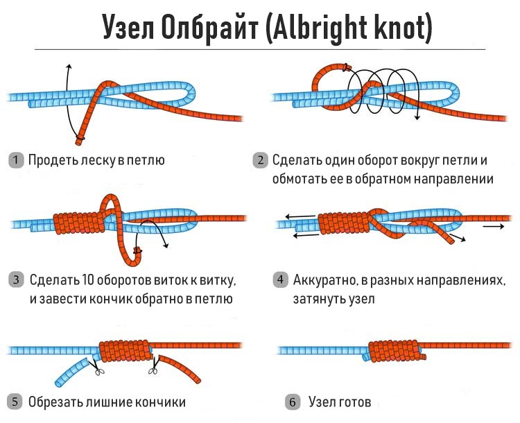
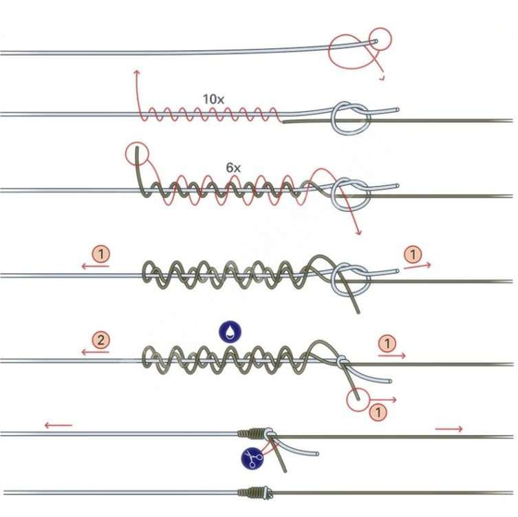
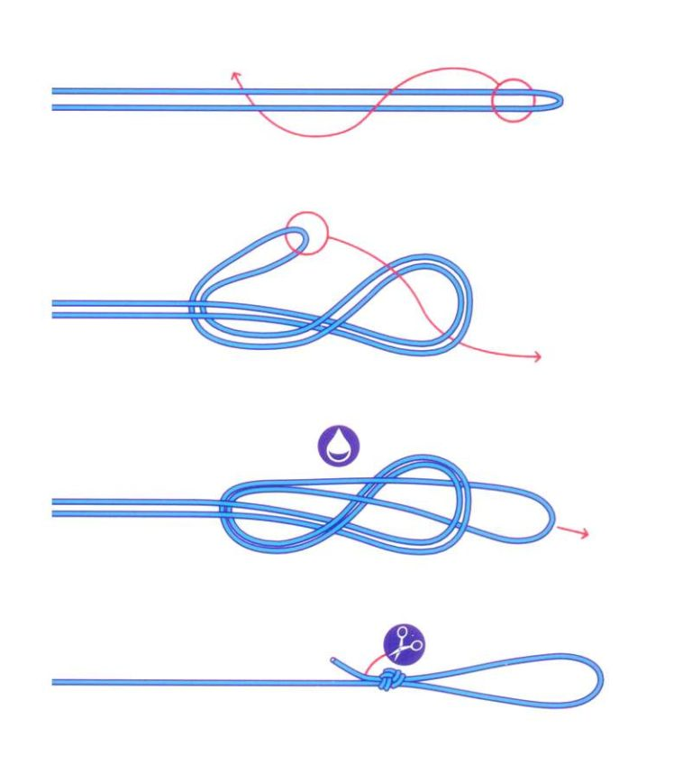
Техника заброса
Заброс в рыбалке – это один из важнейших навыков каждого любителя этого увлечения. Умение правильно забрасывать разные снасти поможет вам дальше заносить наживку, облавливать большую площадь водоема, более точно закидывать оснастку, это все способствует увеличению количества вашего улова, а также поможет ловить рыбу покрупнее.
Виды забросов удилища
Верхний заброс (заброс через голову):
Такой вид заброса подходит для спиннинговой, доночной и поплавочной ловли. Техника этого заброса позволяет далеко закидывать наживку, а также забрасывать тяжелые оснастки. Этот заброс нужно делать с безынерционной катушкой. Чтобы осуществить заброс, сначала нужно проверить – нет ли перехлёстов лески и ненужных узлов, которые могли бы затруднить выход лески со шпули, если не сделать этого, то оснастка при забросе может оборваться, а также может сломаться удилище. После проверки нужно ослабить фрикцион так, чтобы он был способен держать оснастку, но при этом леска легко выходила с катушки, это нужно, чтобы предотвратить запутывание лески. Теперь вам нужно подкрутить леску до того момента, пока до первого узла/поводка не останется (5-10) см, потом сделайте так, чтобы лескоукладыватель катушки был направлен на вас и зажмите начало лески кончиком пальца. После этого вам нужно занести удилище за голову примерно на (30-40) градусов, дальше вам нужно открыть катушку, но не отпускать леску пальцем, размахнитесь удилищем и в момент, когда удилище будет ровно над вашей головой, нужно отпустить леску, вы должны довести удилище до (70-80) градусов от горизонтального положения, а потом ждать – когда оснастка достигнет воды, когда оснастка окажется там, где вам нужно, закройте катушку. Звучит не так сложно, но, учтите, что вы должны делать все это за считанные секунды. Чтобы заброс был дальше, нужно сделать более сильный мах во время него. При забросе учитывайте, что ваше удилище не должно быть перегружено, ваша леска должна быть без порезов, а ваши снасти должны быть исправны, если не уверены в своей технике, то не стоит делать слишком сильные забросы, это может плохо кончиться для вашего удилища.
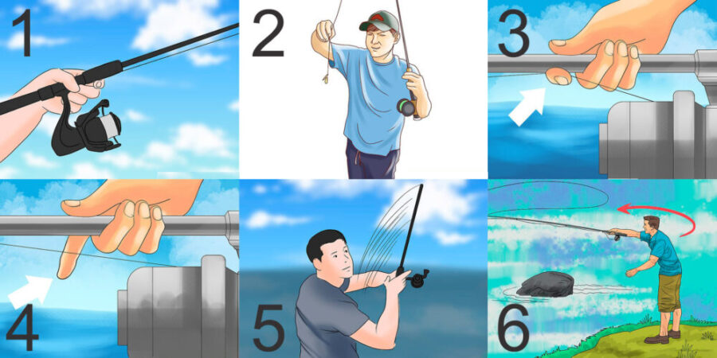
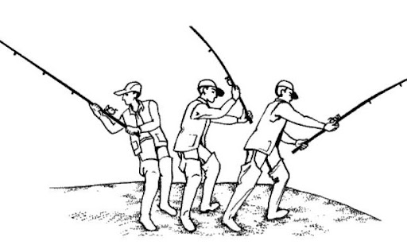
Боковой заброс:
Этот вид заброса используют для спиннинга, когда вам нужно закидывать удилище в местах, которые неудобны или недосягаемы для верхнего заброса, например при ловле на быстрых реках или заросших водоемах. В технике этот заброс почти не отличается от предыдущего, но только в данном случае удилище заносится не за голову, а за правый или левый бок. При забросе важно, чтобы движения были быстрыми, сильными и резкими, ведь этот заброс дает меньшую скорость и инерцию чем верхний. При таком забросе крайне важно не перегружать удилище, так как оно переносит больше нагрузок из – за другой траектории движения, то есть, когда вы используете такой заброс, ваше удилище имеет больший шанс сломаться.
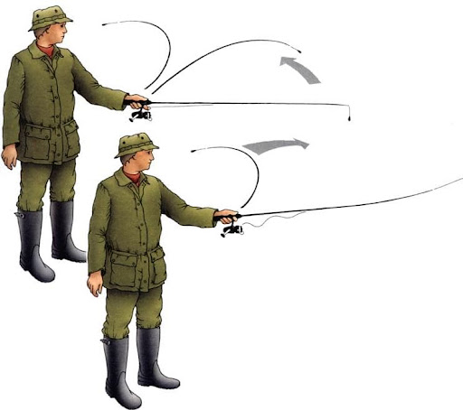
Маховый заброс:
Название этого заброса обусловлено тем, что его чаще всего используют при ловле маховым или болонским поплавочным удилищем. Это очень простой в исполнении заброс, но им нельзя далеко закинуть наживку. Такой заброс предназначен для ловли на поплавок на озерах или реках, где рыба обитает у берега, ведь дальность такого заброса ограничена длиной самого удилища. Чтобы осуществить данный заброс, нужно взять поплавок в руку и приподнять удилище, теперь размахнитесь удилищем, как будто вы направляете его вперед, во время размаха отпустите поплавок и доведите наживку до воды. При таком забросе важна плавность движений, сила и скорость не нужны. Чтобы увеличить дальность заброса, нужно использовать более длинное удилище.
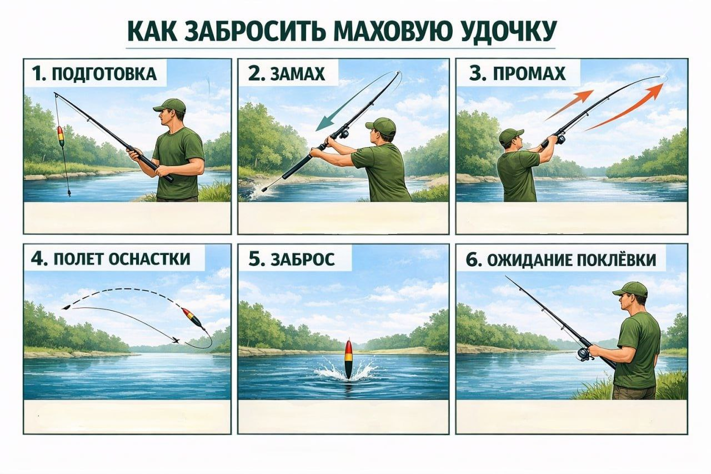
Правила вываживания
Вываживание в рыбалке – это вытягивание рыбы из воды на берег. Это один из главных навыков каждого рыболова. Некоторым может показаться, что вываживать рыбу – не очень сложно, но в этом деле есть свои тонкости, ведь неправильное вываживание может привести к сходу рыбы и даже к поломке снастей.
Как вываживать при ловле на поплавок
В поплавочной ловле вываживание не является таким важным элементом, ведь в основном на поплавок ловят некрупную рыбу, как карась или окунь, эта рыба не брыкается и не может оказать серьезную нагрузку на удилище, но все же для этого вида ловли есть свои правила.
При ловле на поплавок, когда вытаскиваете рыбу, нужно работать очень аккуратно, но при этом леска должна быть все время в натяге, чтобы рыба не сошла. При вываживании нужно плавно вести рыбу по воде в бок от себя, постепенно вытаскивая ее на берег, когда она достигнет суши, нужно взять рыбу, чтобы она не сорвалась.
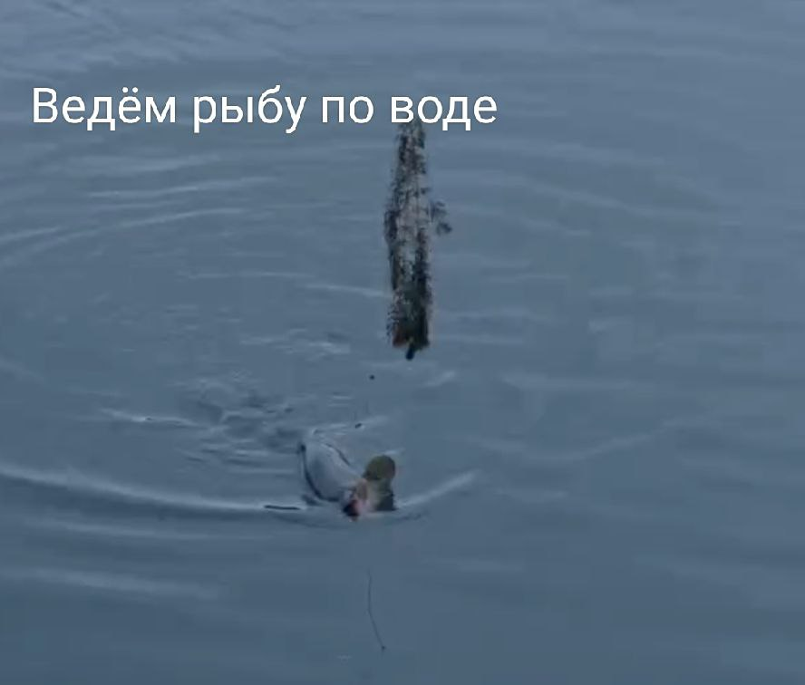
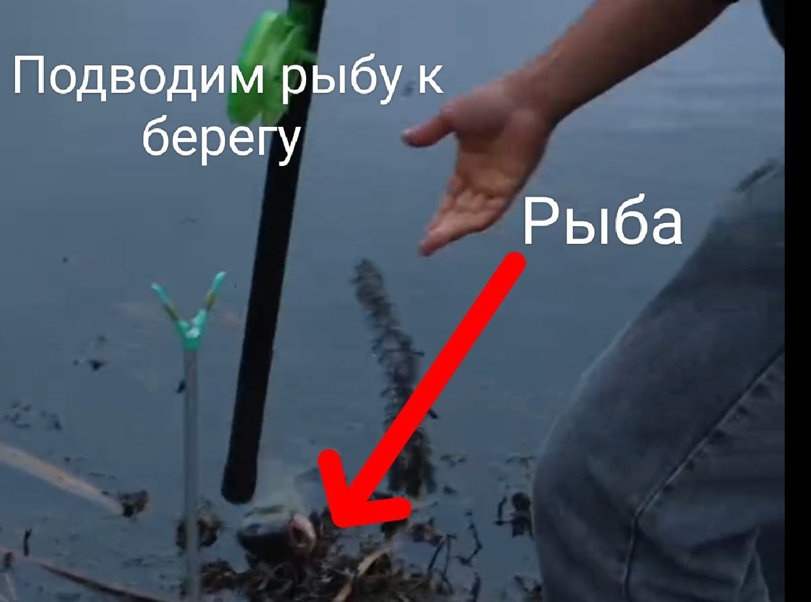
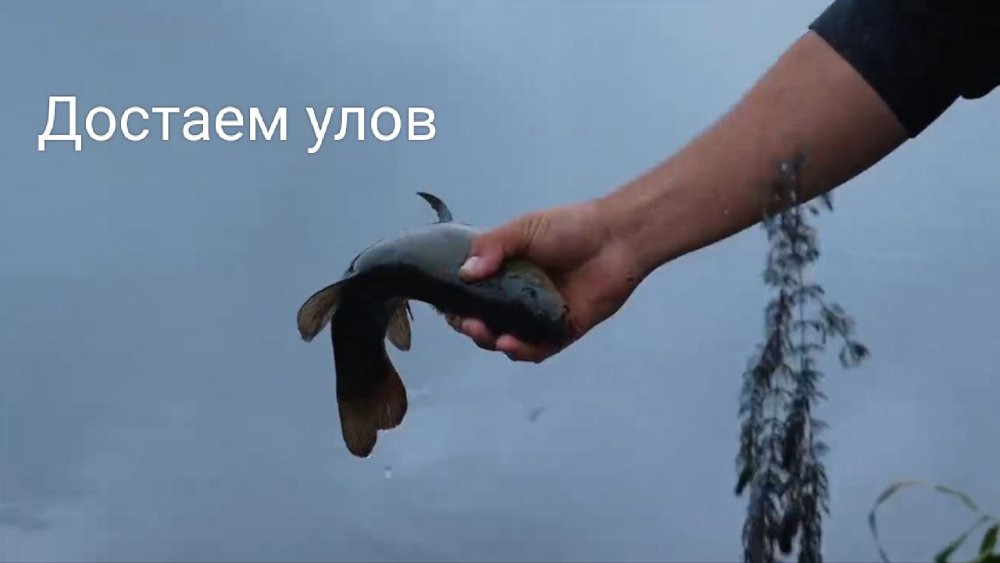
Вываживание при ловле на фидер/донку
В донной ловле очень важно вываживание, ведь в этом виде ловли оснастка забрасывается далеко, а рыба может достигать внушительных размеров.
При ловле на фидер/донку после подсечки рыбы нужно поднять удилище на 70 градусов от горизонтального положения и начать плавно заматывать леску, не стоит сильно торопиться, но и не нужно медлить, главное – держать в леску в натяжении. Если рыба слишком сильная, то можно дать ей побороться и перестать крутить катушку ненадолго, но при этом леска все еще должна быть в натяжении. Когда рыба подходит к берегу, вы можете вытащить ее с помощью подсака (про использование подсака будет рассказано ниже) или плавно вытащить на берег как при поплавочной ловле. В донной ловле главное – не торопиться с вываживанием, не опускать удилище и правильно вытаскивать рыбу на берег.
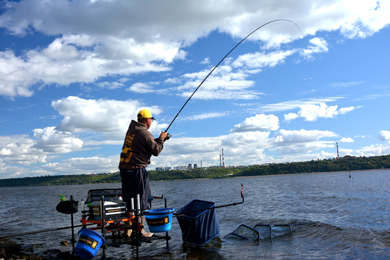
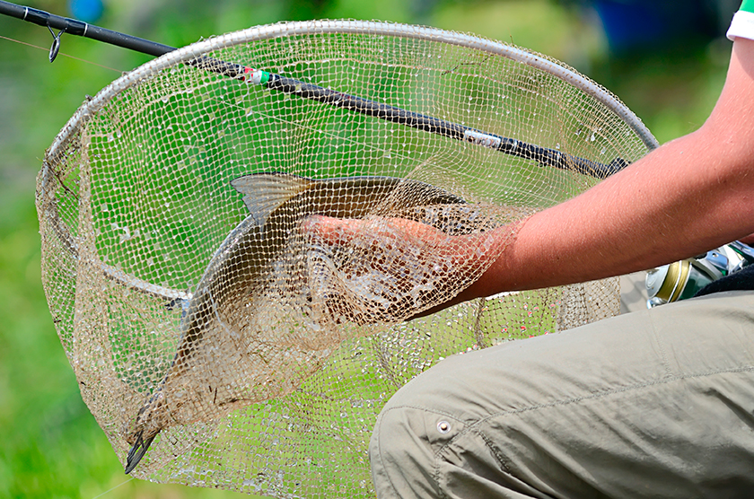
Вываживание при ловле на спиннинг
В спиннинге вываживание тоже очень важно, ведь спиннингисты ловят хищную рыбу, а она может активно брыкаться, прыгать, пытаться выбраться при вываживании, все это надо уметь контролировать, чтобы не упустить улов.
Вываживание в спиннинге почти не отличается от вываживания при ловле на фидер, но только при ловле спиннингом нужно контролировать его изгиб, при вытаскивании рыбы из воды бланк удилища не должен сильно изгибаться, иначе он может треснуть, старайтесь держать спиннинг на (45-70) градусов от вертикального положения при вываживании.
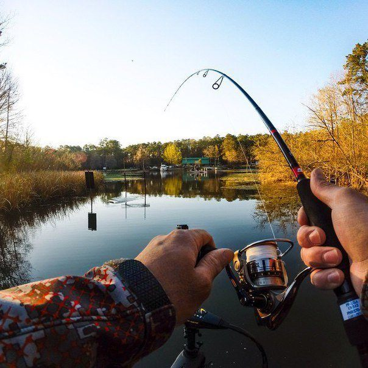
При ловле щуки, окуня и других особо активных рыб не редко встречается такое явление как “свечка”, рыбаки так называют резкое выпрыгивание, брыкание рыбы у поверхности воды при ее вываживании. Хищники делают это, чтобы освободиться от крючка, поэтому нужно уметь “глушить свечки”, то есть предотвращать попытку рыбы выпрыгнуть из воды во время вываживания.
Когда вы видите, что рыба на крючке находится близко к поверхности воды, нужно пристально за ней следить, как только вы увидите резкие всплески и слишком сильные брыкания нужно быстро опустить конец спиннинга на (30-40) градусов, при этом продолжая крутить катушку и держать леску в натяжении, когда вы увидите, что всплески закончились, нужно вернуть удилище в прежнее положение. Учтите, что эта методика применяется только в случаях, когда вы уверены, что рыба вот-вот выпрыгнет из воды, не нужно опускать свой спиннинг при каждом всплеске.
Запомните, что при вываживании крупной и сильной рыбы, крутить катушку нужно с паузами по (2-4) секунды, при этом вы можете отклонять тело назад и крутить катушку во время возвращения в обратное положение, это поможет вам больше вымотать рыбу, во время этих действий леска всегда должна быть в натяжении, это очень важно. При вытаскивании рыба на берег можно также воспользоваться подсаком или вывести рыбу к берегу и взять ее покрепче, чтобы она не выбралась и не поранила вас своими зубами, рыбаки в основном берут рыбу за глаза или за жабры, но вы можете просто обхватить рыбу двумя руками.
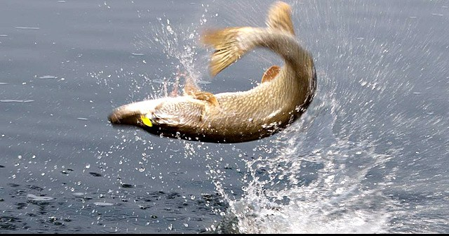
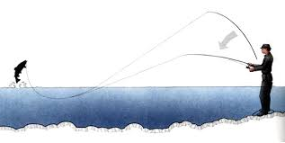
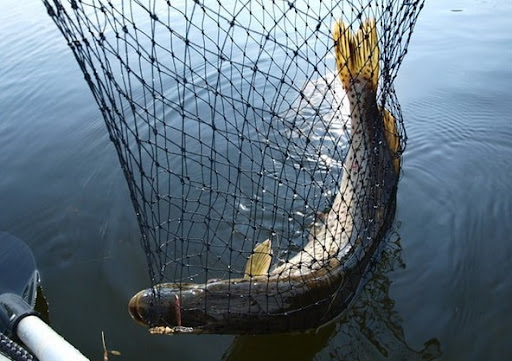
Использование подсака
Подсак (подсачек) — это важный рыболовный аксессуар, представляющий собой сетку на ободе с длинной ручкой, предназначенный для бережного извлечения пойманной рыбы из воды. Он помогает предотвратить срыв или обрыв лески при подъеме крупной рыбы на берег или в лодку. Бывают складные, телескопические, с лесочной, силиконовой или тканевой сеткой.
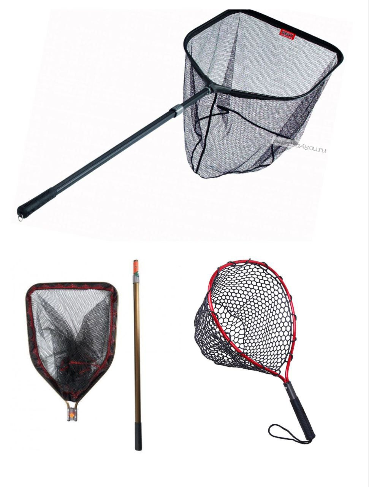
При выборе подсака важен размер рыбы, которую вы собираетесь вытаскивать с помощью него, если вы охотитесь за крупными особями, то подсак должен быть складным, от 40 см в диаметре, а если вам важна компактность и комфорт при перевозке, то выбирайте средний телескопический подсак. Если собираетесь ловить хищника, то нужно выбирать подсаки с тканевой или силиконовой сеткой, ведь она более прочная и способна выдержать резкие движения рыбы.
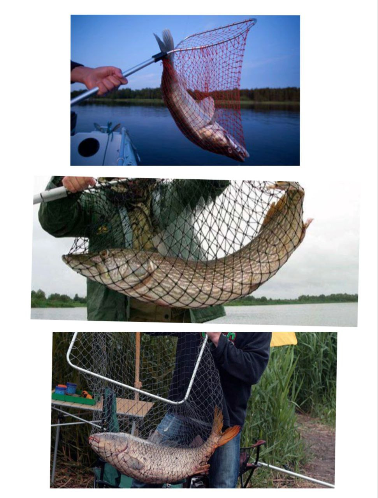
Использовать подсак довольно просто. Когда вы подтаскиваете рыбу к берегу и уверены, что она не будет сильно сопротивляться, вам нужно плавно опустить подсак в воду, аккуратно завести его под рыбу и быстро достать его из воды вместе с уловом, все эти действия должны выполняться быстро, но без лишних всплесков, чтобы не напугать рыбу. Самое главное в работе подсаком – это не доставать его слишком рано, ведь, если рыба увидит подсак раньше времени, она может испугаться лишнего движения и начать брыкаться, что может привести к сходу, также при заведении подсака под рыбу нужно держать леску в натяжении.
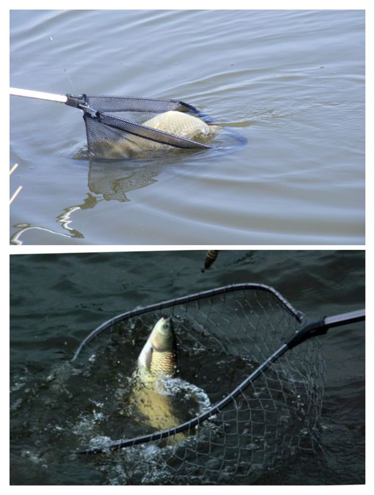